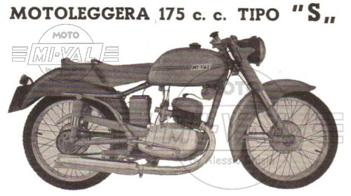
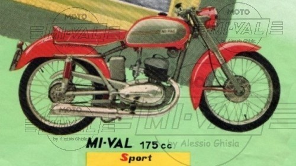

MODELLO 175 S - Produzione 1953
|
 |
 |
SCHEDA TECNICA
MOTORE: Monocilindrico 2 tempi, alesaggio e corsa 58 x 65 mm
Cilindrata effettiva 171,7 cc, potenza effettiva 9 CV a 5000 giri/min , rapporto di compressione 1 : 7
Velocità massima 115 km/h
Carburatore Dell'Orto UB 24 S
Accensione a spinterogeno
Cambio a 4 rapporti, trasmissione primaria e secondaria a catena
Frizione in bagno d'olio a dischi multipli
TELAIO A culla singola
Forcella anteriore telescopica idraulica "MI-VAL"
Sospensione posteriore a forcellone oscillante con ammortizzatori idraulici registrabili
Ruota anteriore: 2,50 x 19 Ruota posteriore: 2,75 x 19 R
Capacità serbatoio: 12 litri
Potenza impianto elettrico: 60 W
Consumo medio: 1 litro per 37,5 km
Candela: -
Peso totale: 100 kg